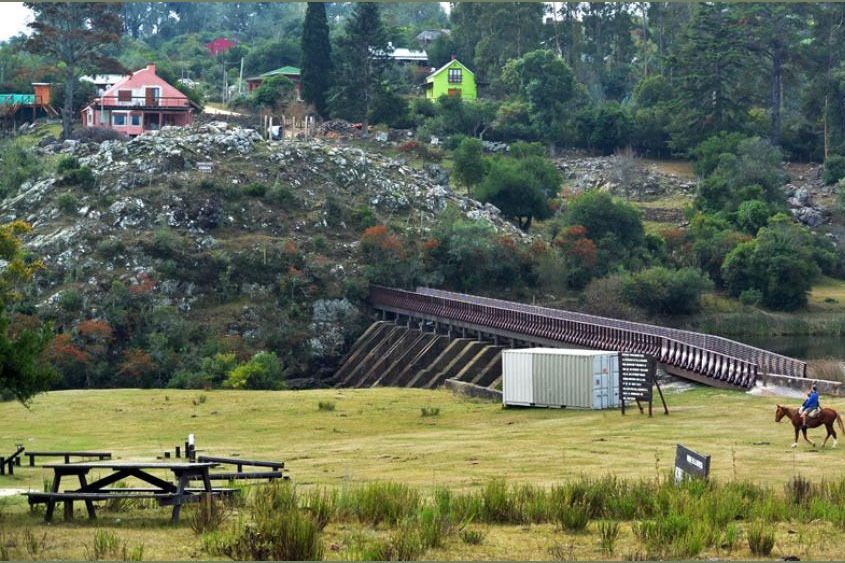
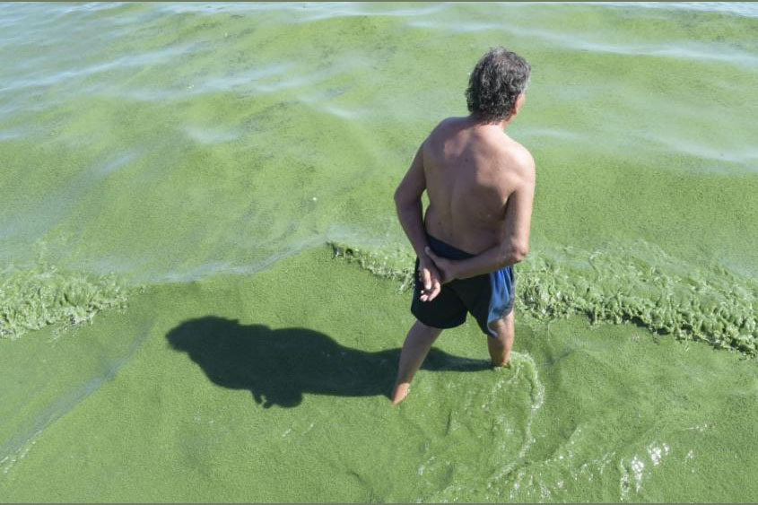

La ley de riego fue aprobada por el parlamento, con respaldo de todos los partidos.
La misma abre la posibilidad a los productores de asociarse para acceder a ese recurso, busca atraer inversiones y apunta a incrementar la producción agropecuaria del país, dándole estabilidad a los cultivos y certidumbre más allá del régimen de lluvias.
Una de las novedades de la nueva norma, que sustituye la que estaba vigente desde 1997, es la creación de las sociedades y asociaciones agrarias de riego con el objetivo de que el uso del riego no sea algo predial e individual, sino colectivo y multipredial mediante la construcción de represas de cierto porte en determinadas cuencas de agua.
1.226 represas hay para la producción agraria, que abarcan unas 200 mil hectáreas regadas. Hay cinco represas para consumo humano y 18 para uso industrial, según el Plan Nacional de Aguas.
En el caso de las sociedades, que son cerradas, se trata de varios productores que se juntan para hacer la inversión. En las asociaciones agrarias de riego, en cambio, la estructura será abierta, bajo ciertas condicones que prevé la ley y bajo las reglas que se dispondrán en el contrato. Otra innovación es que se prevé que en las asociaciones haya productores regantes y no regantes, así como inversionistas que pueden ser ajenos a la actividad, pero que apuesten a una inversión que seguramente rondará los 15 o 20 años.
Por otra parte, norma prevé el otorgamiento de las exoneraciones impositivas previstas en la ley de inversiones, así como la creación del operador de riego, figura que puede ser un individuo o una empresa, y cuyos cometidos se incluirán en la reglamentación de la ley.
Científicos han advertido que los cultivos afectados por la ley son transgénicos y que la técnica empleada para producirlos, la siembra directa, implica el empleo de grandes cantidades de agrotóxicos y de fertilizantes que cuando llueve escurren hacia los cuerpos de agua. También han alertado acerca de que los embalses intensifican la eutrofización y se vuelven incubadoras de cianobacterias que luego circulan aguas abajo.
Las represas aumentan el tiempo de residencia del agua y con esto la temperatura y transparencia de la misma también se elevan. Esto lleva a un riesgo de que se desarrollen floraciones algales y cianobacterias potencialmente tóxicas. La creación de grandes infraestructuras hidráulicas en medio de cauces de agua naturales se modificaría la dinámica natural de los ecosistemas, provocando pérdida de biodiversidad, interrupción de conectividad hídrica, corte de flujo genético.
Pero la degradación de los recursos hídricos y su costo social no es la única causa de reparos hacia la política de riego. La Federación de Funcionarios de OSE alertó que bajo su nueva redacción, la ley habilita a privados a vender agua para riego. Pese a que esto ya estaba permitido, una modificación más sutil se describirá más adelante. Atendiendo a las obras de represamiento para riego ya existentes y su régimen de propiedad, a lo largo de la historia del país se realizaron algunas c on participación del Estado. La mayor represa construida con ese fin es la del arroyo India Muerta, en el departamento de Rocha, que opera desde 1982. Es propiedad de la intendencia y desde ese año tiene su concesión la Comisión Administradora Saman Coopar. India Muerta abastece 8.100 hectáreas de arroz y 1.900 de pasturas, maíz y soja. Aunque otras represas pequeñas y medianas fueron construidas con participación del sector público, algunas nunca se utilizaron y otras no llegaron a regar el área prevista, ya que la demanda de los usuarios fue inferior a la esperada, lo que no resultó motivador para la inversión.
